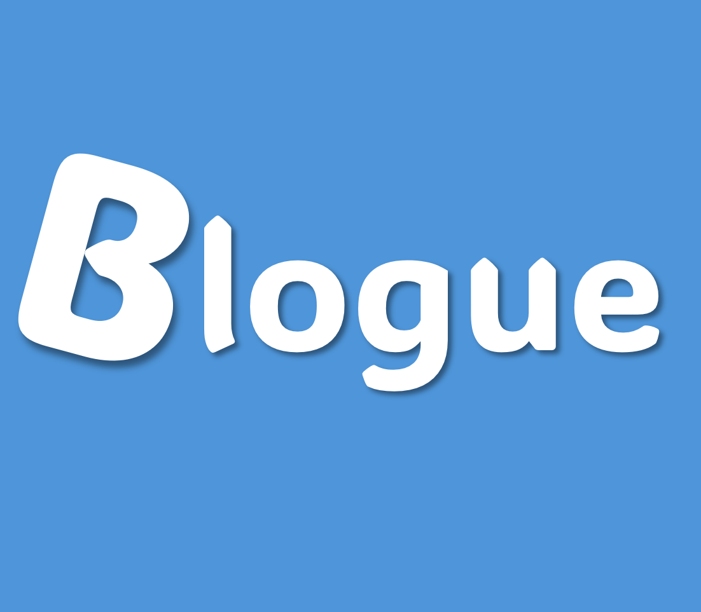

Muse（ミューズ）完全ガイド｜MetaのAIエージェントの使い方・できること・始め方

目次
はじめに
「AIに聞く」から「AIに頼む」へ。最近話題の Muse（ミューズ） は、Metaが提供する“パーソナルAIエージェント”です。 チャットで質問に答えるだけのAIとは違い、実際に調べて、手配して、作って、覚えておいてくれる——そんな「自分専属のアシスタント」が持てるサービスなんです。
この記事では、Museとは何か、どんなことができるのか、始め方、招待コードの使い方、うまく頼むコツまで、まるっと解説します。 「気になってたけど、よく分からなかった」という人は、ぜひ最後まで読んでみてください！
Museとは？「答えるAI」から「やってくれるAI」へ
Museは、Metaが2026年9月8日に公開したパーソナルAIエージェントです。日本を含む、アメリカ・カナダ・シンガポールで利用できます。 最大の特徴は、ユーザー一人ひとりに専用のエージェントと専用のコンピュータが用意されること。会話のたびにリセットされるのではなく、あなたの好みや予定、過去のやり取りを覚えたまま、ずっと付き合ってくれます。
- 自分専用のエージェント： 名前をつけたり、話し方を育てたりできる「自分の分身」のような存在
- 実際に作業する： ブラウザや各種サービスを使って、調べもの・予約・購入の手配・資料作成などを実行
- 覚えてくれる： 好みや大事な予定を記憶して、次回から先回りして動いてくれる
- つながる： GmailやGoogleカレンダーなど、日常のサービスと連携できる
使える環境も幅広く、Web（muse.ai）、iPhone・Androidアプリ、Macアプリ、Chrome拡張機能が用意されています。スマホで頼んで、パソコンで続きを確認する、といった使い方もOKです。
Museでできること
「で、結局なにができるの？」という人のために、代表的な使い方をカテゴリ別にまとめました。
🔍 調べもの・情報収集
- ニュースや話題の要約、複数サイトを比べた調査レポート
- 商品の比較検討（価格・スペック・口コミの整理）
- 旅行プランの作成（飛行機・ホテル・観光スポットの組み立て）
🗓️ 予定・メール・日常の管理
- Googleカレンダーへの予定の登録・変更、空き時間の調整
- Gmailの検索・要約、返信文の下書き
- 「明日の15時に教えて」のようなリマインダーや、定期的なチェックの自動化
- 写真で送った予定表を読み取ってカレンダーに入れる、といった面倒な転記作業
🛒 買い物・予約の手配
- 欲しい商品を探して、価格を比べて、カートまで用意
- レストランや美容室などの予約の下調べと手配
- フライトやホテルの候補出しと比較
※購入や予約のような大事な操作は、実行前に必ず確認（承認）を挟む仕組みになっています。
✍️ 文章・資料・コンテンツ作成
- ブログ記事、SNS投稿、メール文などの執筆と推敲
- レポート、スライド、表計算などのドキュメント作成
- アイデア出し、企画の壁打ち、名前決めのサポート
🎮 ゲーム・アプリ・Webサイト制作
- 「スマホで遊べるゲーム作って」のひと言で、実際に遊べるゲームを制作
- 勉強アプリや便利ツールなど、ちょっとしたアプリの作成
- Webページの作成や、既存サイトの修正・運用のお手伝い
🎨 画像・音楽などの生成
- イメージに合わせた画像の生成・編集
- ポッドキャスト風の音声コンテンツの作成
- SNS投稿用の素材づくり
🔗 サービス連携と自動化
- Gmail、Googleカレンダー、Googleタスク、GitHub、Spotifyなど多数のサービスと連携
- 「毎朝、今日の予定とニュースをまとめて」のような定期配信
- Feed（自分専用のニュースフィード）やIdeas（やってみたいことの提案）といった機能も
始め方｜登録から最初のひとことまで
始めるのはとても簡単です。
- STEP 1： muse.ai にアクセスするか、App Store / Google Playで「Muse」アプリを入れる
- STEP 2： アカウントを作成してログイン
- STEP 3： 招待コードを持っている人は、登録から48時間以内に入力する（次の章で詳しく）
- STEP 4： あとは話しかけるだけ。「明日の天気は？」でも「ゲーム作って」でもOK
料金は、無料プラン（利用量に上限あり）から始められます。もっとたくさん使いたい人向けに有料プランもあり、無料プランでは「Muse Spark」、有料プランではより高性能な「Muse Wonder」というモデルが使われます。 まずは無料で試して、「これは手放せないな」と思ったら有料を検討するのがおすすめです。
招待コードの使い方
Museには招待の仕組みがあります。友達の招待コードを入力すると特典が受けられる場合があるので、始めたばかりの人は忘れずに入力しましょう。 特典の内容や条件は招待画面に表示されるものが正解なので、入力時に確認してください。
コードを入力する場所
- iPhone / Androidアプリ： 設定 ＞ Redeem token（コード入力は登録後48時間以内だけ表示されます）
- Web（muse.ai）： 設定 ＞ 一般 ＞ 使用量 ＞ 招待コードを使う
自分のコードをシェアするには
- モバイルアプリでは、チャット画面右上の招待ボタン（プレゼントのアイコン）からシェアできます
- SNSで「招待コード置き場」のような投稿をして、コードを交換し合う文化もあります
うまく頼むコツと例文集
Museは「頼み方」で結果が大きく変わります。コツはこの4つ。
- 目的を伝える： 「何のため」が分かると、ちょうどいい形で返してくれる
- 条件を添える： 予算・日時・人数・スマホで使いたい、など
- まず形にしてもらう： 完璧な指示より「とりあえず作って」。直すのは後からでOK
- 気になるところは直してもらう： 「もっと明るく」「ここだけ大きく」と伝えるだけで調整してくれる
そのまま使える例文集
- 「来週の金曜、19時から2人で入れる渋谷の居酒屋を探して」
- 「この写真の予定表を読み取って、Googleカレンダーに入れて」
- 「スマホで遊べるタワーディフェンスゲームを作って。デザインは最高に」
- 「友達と1人1台で対戦できるゲームがほしい」
- 「毎朝7時に、今日の予定と天気とニュースをまとめて教えて」
- 「この商品、他の店と比べて一番安いところはどこ？」
- 「ブログの新しい記事を書いて。今までの記事と同じ構成で」
- 「勉強した時間だけキャラクターが育つ、集中アプリを作って」
- 「メールの返信を考えて。丁寧だけど短めで」
- 「旅行のプランを作って。2泊3日、予算は1人5万円まで」
ポイントは、友達に頼むような自然な言葉で大丈夫ということ。専門用語や「プロンプト」の知識は要りません。
活用事例｜こんなことまでできる
- ゲーム制作： ひと言の依頼から、タワーディフェンス、町づくり、友達対戦ゲーム（オンライン対戦つき）まで実際に遊べる形に
- カレンダー転記： 紙や写真の予定表を送るだけで、数十件の予定をカレンダーへ一括登録
- サイト運用： ブログ記事の執筆・公開、クイズサイトの不具合修正、便利ツール集の制作などを代行
- 情報チェック： 自分のアカウントの情報漏洩通知が来ていないか、メールを調べて報告
- リマインド： 「15時から1時間ごとに思い出させて」のような細かいお願いにも対応
- SNS運用： 投稿の文案づくりから、反応のチェックまで
共通しているのは、どれも「面倒だけど誰かにやってほしいこと」だということ。 Museの真価は、頭の良さよりも、この“面倒の引き受け上手”なところにある気がします。
よくある質問
Q. 無料で使えますか？
はい。無料プランがあり、利用量に上限はありますが、まずは無料で十分に試せます。上限は定期的にリセットされます。もっと使いたい場合は有料プランがあります。
Q. どこで使えますか？
日本、アメリカ、カナダ、シンガポールで利用できます。Web（muse.ai）、iPhone・Androidアプリ、Macアプリ、Chrome拡張機能があります。
Q. 勝手に買い物や予約をされませんか？
購入・予約・送信・削除のような取り返しのつきにくい操作は、実行前に承認を求める仕組みです。勝手に進むことはありません。
Q. 招待コードはいつまで入力できますか？
アプリでは登録後48時間以内が目安です。「あとでいいや」と思っていると過ぎてしまうので、始めたらすぐ入力するのがおすすめです。
Q. 間違ったことをしたらどうすれば？
会話で「それ違うよ」と伝えるだけで、直してくれます。予定の変更や取り消しも、そのまま頼めばOKです。
Q. 自分の情報は覚えられるの？
はい、好みや大事なことは記憶してくれます。それが「専属」たるゆえんです。もちろん、覚えてほしくないことは「忘れて」と頼むこともできます。
まとめ
Museは、質問に答えるだけのAIではなく、調べて、作って、手配して、覚えてくれる「自分専属のエージェント」です。
始め方は簡単で、無料から試せます。招待コードがある人は、登録から48時間以内に入力するのをお忘れなく。 「面倒なこと」をひとつ、試しに頼んでみるところから始めてみてください。きっと生活の景色が少し変わりますよ🫧